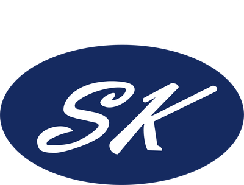
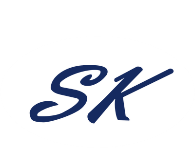

logo 放在一个白色胶囊底上,原版深蓝椭圆完整可见,最稳妥、最像"品牌章"。导航栏和页脚都用。

深色背景上用反色版本:椭圆变白、SK 变深蓝。这是深色底最常见的标准做法,干净利落,不需要任何外框或特效。

保留原版 logo,外面加一圈很细的金色椭圆线,和网站金色强调色呼应。比发光克制,有"金属镶边"的感觉。
导航栏改成白底,原版深蓝 logo 本色显示,最清晰、最"高端企业站"的观感;页脚保持深色渐变(页脚用方案 B 的反白 logo)。导航栏改动最大。